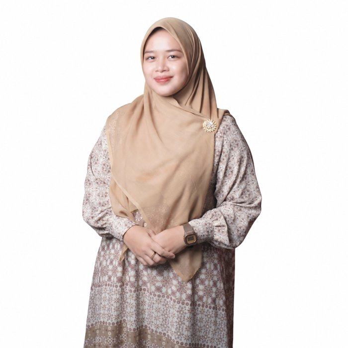

Kisah Ibnu Aqil 2
Sebuah ikhtiar yang ditanam dengan cinta, di atas bukit yang hijau di Dramaga, Bogor.
Didirikan dengan sebuah cita-cita
Ibnu Aqil 2 didirikan oleh Almarhum Drs. KH. Ubaidillah bersama istrinya, Hj. Saidah Hilmiyah, S.Pd., M.M. Keduanya ingin menghadirkan sekolah yang tidak hanya mencerdaskan, tapi juga membekali anak dengan kemandirian.
Tempat ini dipilih karena lahannya luas, sumber airnya melimpah, dan suasananya asri. Lokasinya cocok untuk bertani dan beternak, sehingga anak bisa belajar di kelas sekaligus belajar langsung dari alam.
Saat ini Ibnu Aqil 2 berada di bawah naungan Yayasan Haji Agus Salim Bogor.


Dari Kramat menjadi Karomah
Sekolah ini berada di Kampung Cihideung Kramat, Desa Purwasari, Kecamatan Dramaga. Para pendiri mengganti kata kramat menjadi karomah.
Karomah berarti kemuliaan yang Allah berikan kepada hamba-Nya yang saleh. Nama ini adalah doa agar anak-anak tumbuh mulia akhlaknya dan berkah ilmunya.
Pergantian nama ini juga menjauhkan kesan mistis dari kata "keramat". Bukit ini ingin dikenal karena kebaikan yang lahir darinya.
Pendidikan yang berjalan bersama kemandirian
- Iman dan Al-Qur'anMengaji, praktik ibadah, hafalan surat dan doa harian
- Akhlak muliaAdab kepada guru, orang tua, teman, dan alam
- Belajar menyenangkanMetode sentra dan media pembelajaran menarik
- BertaniMenanam dan merawat kebun bersama
- Beternak dan kolam ikanBelajar sayang dan tanggung jawab
- Peduli lingkunganMenjaga air, tanah, dan pepohonan

Kepala Sekolah
Dr. Hj. Fuzna Nur Aqilah, M.Pd.
Kepala TK Ibnu Aqil 2 dan SDIT Ibnu Aqil 2. Bersama para guru, beliau mendampingi setiap anak agar tumbuh berilmu, berakhlak, dan berprestasi.
Hubungi Bu FuznaBeliau tidak sempat menyaksikan bukit ini berkembang.
Kini kitalah yang melanjutkan.
Almarhum Drs. KH. Ubaidillah lebih dahulu berpulang sebelum sempat melihat cita-citanya tumbuh. Namun benih yang beliau tanam terus tumbuh. Setiap anak yang belajar di sini dan setiap kebaikan yang lahir dari bukit ini adalah kelanjutan ikhtiar beliau. Semoga menjadi amal jariyah yang terus mengalir.
Mari bergabung bersama kami